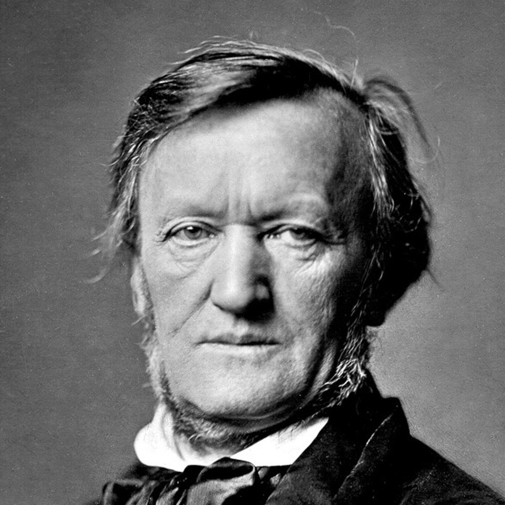

Cette conversation, je l'ai eue avec mon frère. Ce « Bah.. » venait de moi. Et c'est ce simple mot qui a fait que vous puissiez consulter ce site.
Jeudi 25 mai 2017 : cela ne vous évoque sûrement rien, mais à cette date a été remise au goût du jour une science presque oubliée. Ce jour là, AlphaGo, mis au point par Google, dominait pour la seconde fois Ke Jie, champion du monde de Go. Après le morpion, les dames et les échecs, l'ordinateur a surpassé l'Homme dans le jeu réputé le plus complexe au monde. Qu'en conclure ? Mon frère, non sans peut-être un peu trop de hardiesse, m'a donné son avis sur la question. Je n'étais pas d'accord avec lui, mais je dois avouer avoir été bien ennuyé pour argumenter mon point de vue. Il faut avouer que la puissance de calcul atteinte aujourd'hui ne laisse planer aucun doute sur la supériorité de l'informatique sur l'Homme dans la résolution de tous les problèmes logiques. L'idée m'est alors logiquement venue de me demander : quelle discipline n'est pas logique ? La première réponse à laquelle j'ai pensé est : l'art. Attention, ne me méprenez pas : loin de moi l'idée d'insinuer que les artistes sont des êtres illogiques ! Je dirais plutôt qu'ils ont la possibilité de prendre des libertés, quitte à casser les codes. Un ordinateur ne peut pas prendre de telles libertés (hormis dans un film de science-fiction). En réalité, je n'ai pas pensé à l'art, en tant que tel. J'ai pensé à un art en particulier : la musique. Pourquoi ? me direz-vous. La nature ne m'a pas doté d'une prose extraordinaire, et les quelques tableaux que j'ai peint, ou du moins essayé de peindre, n'ont suscité qu'un sourire compatissant de mes parents. Mais, étant tout de même bien faite, elle m'a accordé l'oreille musicale de mon père. Tout jeune, j'ai eu envie d'apprendre le piano, et d'années en années, les sourires forcés de mes parents en sont devenus de vrais. En résumé, je suis musicien, et par association d'idées, celle de l'art s'associe inconsciemment dans mon esprit à celle de la musique. J'ai donc pu répondre à mon frère, après quelques secondes de solitude. Il n'a su trouver aucune objection à cet exemple. J'avais gagné, j'avais raison. Mais est-ce vrai ? Avais-je vraiment raison ? En réalité, qui de l'Homme ou de l'ordinateur est le meilleur compositeur ?
Vous aussi, vous voulez le savoir ? Alors plongez avec moi dans les méandres de l'informatique, découvrons le lien étrange entre la musique et les mathématiques, et essayons de créer notre ordinateur-compositeur ! C'est tout un projet, et comme tout projet, il mérite bien un nom. Je vous le donne en mille :
Mozart Ex Machina
Discussion de la définition de meilleur
Et là ! Ne nous emballons pas. Un petit détail vous a peut-être gêné : ça veut dire quoi « être meilleur» et notamment « être le meilleur compositeur» ? C'est vrai que ce n'est pas très clair : on ne peut pas définir de « meilleur compositeur » de manière absolue. Il y a beaucoup de manières différentes de considérer le mot « meilleur » dans ce contexte. Par exemple, on peut le voir comme :
meilleur en terme de volume de composition : le meilleur compositeur est celui qui a composé le plus d'œuvres.
meilleur en terme de rapidité de composition : le meilleur compositeur est celui qui compose ses œuvres le plus rapidement.
meilleur en terme de qualité de composition : le meilleur compositeur est celui qui compose les œuvres les plus appréciées.
Dans les deux premières définitions, pas de problème : le critère utilisé est quantitatif, il n'y a pas de doutes possibles. Dans la dernière définition, toutefois, le critère utilisé est qualitatif : apprécié, certes, mais par qui ? C'est plus compliqué alors d'établir un classement ou une note.
Dans nos conclusions, nous prendrons bien garde à séparer ces trois interprétations, pour ne pas émettre de jugement trop hâtif.
De l'inspiration à la composition
D'où vient l'inspiration ?
Épineuse question, n'est-ce pas ? Si vous la posez à des artistes, ils vous livreront sûrement les moyens qu'ils utilisent pour stimuler leur créativité. Mais il y a une chose sur laquelle ils seront tous d'accord : l'inspiration ne se commande pas. Elle vient sans crier gare, et s'en va quand elle veut. C'est donc à nous d'être vigilants, pour ne pas oublier l'idée qui nous a été inspirée. Cette idée peut être (dans le cas de la musique) un accord, une phrase mélodique, et parfois même une œuvre entière !
Elle peut surgir à tout moment, même lorsqu'on dort. Difficile à croire, n'est-ce pas ? Laissez moi vous donner quelques exemples :
1692-1770
Giuseppe Tartini
À propos de sa Sonate des trilles du Diable, il raconte : « J'ai rêvé une nuit que j'avais scellé un pacte avec le Diable pour le prix de mon âme. Tout obéissait à ma volonté, mon nouveau serviteur connaissait d'avance tous mes souhaits. Alors me vint l'idée de lui confier mon violon et d'attendre ce qu'il en tirerait. Quel ne fut pas mon étonnement lorsque je l'entendis jouer, avec un art consommé, une sonate d'une beauté telle que je n'aurais pu en imaginer de plus belle. J'étais stupéfait et charmé, le souffle court et je me réveillai. Je saisis alors mon violon et essayai de reproduire cette sonorité extraordinaire.»

1813-1883
Richard Wagner
En parlant de son opéra Tristan et Isolde le compositeur écrit que « j'ai rêvé tout cela. Jamais ma pauvre tête n'aurait pu inventer une telle chose délibérément. »
1942-
Paul McCartney
Alors qu'il dormait chez sa petite amie, Paul rêve d'un orchestre jouant une mélodie qui lui est inconnue. Lorsqu'il se réveille le lendemain matin, il retranscrit cette mélodie sur son piano. Sûr d'avoir accidentellement plagié un autre artiste, il cherche, pendant plus d'un mois, le vrai propriétaire de celle-ci. Ces recherches étant infructueuses, il doit se rendre à l'évidence : ce morceau est le fruit de sa composition ! Qu'est-elle devenue ? Après que les paroles ont été écrites, elle a été nommée Yesterday.
Ces quelques exemples nous ont montré qu'il était possible d'avoir de l'inspiration, et même de composer de la musique tout en dormant. Qu'en est-il alors de lorsqu'on est éveillé ? Sommes nous voués à devoir dormir pour composer de la musique ? Cette question, bien qu'absurde, soulève celle de la stimulation de l'inspiration. Est-ce possible de favoriser la venue de l'inspiration ? Quoi de mieux pour nous répondre que des professionnels !
Kenneth Nilsenaka K-391
Producteur de musique électronique
23 ans
640 000 fans sur Youtube
Bernd Schneider
Professeur de piano
Directeur du Helge Ankers Musikinstitutt
35 ans
J'ai eu l'occasion de leur poser quelques questions à propos de leur manière de composer.
Comment trouvez vous l'inspiration ? Est-ce qu'il y a des moments où vous vous sentez plus inspirés ? Connaissez vous des méthodes pour stimuler votre inspiration ?
K.N : C'est difficile d'expliquer ce qu'est l'inspiration, car je considère que c'est surtout un mode de vie. J'ai choisi de toujours m'inspirer de tout, et toujours apprendre de nouvelles choses. L'inspiration vient sous de nombreuses formes, mais c'est compliqué de toujours être inspiré. Même chose avec les sentiments : bien qu'ils fluctuent beaucoup selon des réactions chimiques dans notre cerveau, on peut choisir de toujours vouloir être heureux.
B.S : J'essaie souvent de m'installer dans une pièce où règne un calme absolu. De temps en temps, je me lève et tourne un peu en rond dans la pièce. Dans certains cas, je pars faire un jogging, en emmenant mon téléphone seulement pour enregistrer les idées qui me viennent à l'esprit.
En réalité, il n'y a pas de moments spéciaux : une idée viendra à un moment ou un autre. Alors je l'écris, puis je travaille avec cette idée pendant plusieurs jours. Je la joue au piano, et je note des détails à perfectionner etc. Concernant la manière de stimuler l'inspiration, je dirais qu'il faut se sentir soi-même, bien dans sa peau. J'ai pour habitude de faire du sport le matin, puis prendre une douche et manger un bon petit-déjeuner, pour évacuer le stress et me sentir vraiment d'attaque avant de vouloir composer.
Utilisez vous un ordinateur lorsque vous composer ? Si oui, de quelle manière ?
K.N : Oui, j'ai monté mon propre PC pour répondre à mes besoins précis. Je produis tout à l'aide du logiciel Fruity Loop Studio.
B.S : J'utilise mon ordinateur avec Sibelius (un logiciel d'édition de partition) et un piano connecté en MIDI. Et comme précisé, j'utilise aussi mon téléphone pour enregistrer les idées dès qu'elles me viennent.
Que pensez vous de l'utilisation de l'IA dans la musique ? Selon vous, y a-t-il un futur pour cette technologie dans l'industrie musicale ?
K.N : Je pense que ça peut être un bon moyen de commencer la production musicale. Ca peut être très utile, pour faire le mixage et le mastering par exemple. Cependant, je pense que la musique sera toujours empreinte de l'essence de son créateur, et devra donc être écrite par un humain pour ne pas la perdre, pour garder cette trace de vie. Ce sera d'ailleurs le cas pour toute production artistique selon moi. Absolument, il y a un futur pour l'IA ! J'utilise déjà des logiciels qui analysent le projet entier et réalisent le mixage automatiquement. Mais c'est une technologie incroyablement complexe, et personnellement, je ne m'en sers que pour des tâches subsidiaires.
B.S : Cela me semble très intéressant. Mais d'un autre côté, vais-je travailler à « tuer mon métier » ? (rire). On constate aujourd'hui que les machines se chargent en tout cas des opérations systématiques et répétitives. Je pense que l'on peut aller très loin avec l'IA, mais pas jusqu'à la complète autonomie. Une composition est quelque chose de vivant, qui demeure dans le temps, marqué entre autres par l'environnement du compositeur. Cette part vivante, qui est comme la cerise sur le gâteau de l'oeuvre, sera selon moi difficile à répliquer avec des machines. Mais je suis impatient de voir ce qu'il en adviendra.
L'inspiration est décidément une source mystérieuse. Comment alors espérer créer des ordinateurs qui puissent composer de la musique, s'il n'ont pas d'inspiration ? Il n'est certes pas possible de modéliser une inspiration. Heureusement, il existe un lien très fort entre la musique et un domaine dont les machines sont très friandes : les mathématiques.
Un lien entre la musique et les mathématiques ?
La musique est un exercice d’arithmétique secrète, et celui qui s'y livre ignore qu'il manie les nombres.
Leibniz
Je n'ai pas tout de suite réalisé à quel point cette citation reflétait une vérité assez méconnue.
Essayons d'imaginer un instant que la musique n'a jamais encore existé. Comment pourrait-on définir les douze notes de la gamme chromatique, les accords qui sont harmonieux, les intervalles qui font à l'inverse siffler les oreilles ? D'ailleurs, pourquoi y a-t-il douze notes de musique ? La solution est mathématique, et provient de la presque égalité suivante :
219 ≈ 312
Si l'on considère un son, il possède non seulement une fréquence fondamentale, mais aussi des harmoniques, qui sont tous les multiples de la fondamentale. Toutes les harmoniques seront (comme leur nom l'indique) en harmonie avec la fréquence fondamentale : cette propriété va nous permettre de comprendre d'où vient la gamme actuelle, dite chromatique.
Supposons que l'on prenne une fréquence de départ, au hasard, 440 Hz .
En prenant certaines de ces harmoniques, on peut reconstruire de nouvelles notes.
Par exemple, si l'on prend la deuxième harmonique (fréquence multipliée par 2), on obtient ce que l'on appelle l'octave.
Autre exemple, si l'on prend la troisième harmonique (fréquence multipliée par 3), on obtient une nouvelle note, qui sonne harmonieusement avec la première : on l'appelle la quinte.
Pour en finir avec les exemples, si l'on prend la cinquième harmonique, on construit ce qu'on appelle la tierce.
Par des multiplications successives, on peut construire encore de nouvelles notes. Observons cela par un tableau, construit de la manière suivante. Chaque colonne représente une nouvelle note, obtenue en passant à la quinte la note précédente. Comment il existe plusieurs octaves pour une même note, nous mettrons plusieurs lignes pour représenter plusieurs octaves. Chaque case du tableau contient la fréquence (en Hz) de la note
Numéro de la note
1
2
3
4
5
6
7
8
9
10
11
12
13
Octave 1
55
83
62
46
70
52
78
59
44
66
49
37
56
Octave 2
110
165
124
93
139
104
157
117
88
132
99
74
112
Octave 3
220
330
248
186
278
209
313
235
176
264
198
149
223
Octave 4
440
660
495
371
557
418
626
470
352
529
396
397
446
Octave 5
880
1320
990
743
1114
835
1253
940
705
1057
793
595
892
On constate que les notes numéro 1 et numéro 13 sont quasiment identique : elles ont presque les mêmes fréquences ! On a donc réussi à retomber sur notre première note en ne faisant que des passages à la quinte.
En termes mathématiques, passer à la quinte revient à multiplier par 3 la fréquence. Lorsqu'on fait cela, on change d'octave en passant à une octave supérieure : par exemple, nous avons fait 55x3=165, ce qui nous fait passer de l'octave 1 à l'octave 2. Ce n'est pas gênant en soit, mais il est préférable pour nous de ne pas changer d'octave lors de nos calculs. Comment fait-on pour revenir à l'octave 1 après le passage à la quinte ? Il suffit de diviser par 2 la fréquence, pour baisser d'une octave. Malheureusement, dans certains cas, ce n'est pas que d'une octave, mais de deux que nous montons. Alors, nous devons diviser par 4 la fréquence pour revenir à l'octave initiale.
Pour conclure, il a fallu 12 passages à la quinte pour revenir à notre note initiale. Parmi ces 12 passages, 7 ont nécessité une division par 4 pour revenir à l'octave initiale (les autres ne demandant qu'une division par 2). Nous en déduisons donc que 312 / 219 ≈ 1. Cela est équivalent à 219 ≈ 312.
Maintenant, on comprend d'où viennent les 12 notes que l'on connaît : et pour la petite anecdote, la fréquence que j'ai choisie au hasard pour tout reconstruire n'est autre que la note de référence pour accorder les instruments de musique : le LA.
Vous l'aurez remarqué, il existe quand même un petit écart entre la note numéro 1 et la note numéro 13, et celui ci va nous compliquer la tâche.
En effet, la dernière quinte va sonner moins juste que les autres : on l'appelle la quinte du loup.
Pendant des centaines d'années, jusqu'au XVème siècle, les musiciens se sont arrangés pour que cette quinte du loup soit placé entre deux notes peu utilisées (le La bémol et le Mi bémol) pour que l'écoute soit la plus agréable possible. On appelle ce mode d'accordage le tempérament pythagoricien.
Cela explique pourquoi beaucoup des œuvres du Moyen-Age ne sont pas écrites en La bémol, et aussi pourquoi elles utilisent beaucoup l'octave et la quinte dans leur harmonies : en voici un exemple.
Pour pallier ce problème de dissonance, il a été décidé de répartir l'erreur d'harmonie entre la note numéro 1 et la note numéro 13 (qui est de 7Hz) sur l'ensemble des douze notes. Ainsi, toutes les notes que nous jouons sont un tout petit peu fausse , c'est à dire qu'elles ne sont jamais en harmonie parfaite avec la fondamentale, mais l'écart de justesse est si faible que l'on ne peut pas le percevoir. Ce système est appelé le tempérament égal.
Dans son œuvre « Le clavier bien tempéré », Bach a composé deux œuvres pour chacune des 12 gammes : utiliser un tempérament égal est alors obligatoire, sans quoi il existerait une gamme dans laquelle les œuvres sonneront fausses, à cause de la quinte du loup. Or, le tempérament égal n'existait pas encore à l'époque de Bach. Où était alors son astuce pour pouvoir jouer toutes ses compositions sans se heurter à la quinte du loup ? Les spécialistes s'accordent (sans mauvais jeu de mots) à dire qu'il tempérait lui-même son instrument avant de jouer pour s'adapter à la gamme de l'œuvre.
Services
Dignissimos asperiores vitae velit veniam totam fuga molestias accusamus alias autem provident. Odit ab aliquam dolor eius.